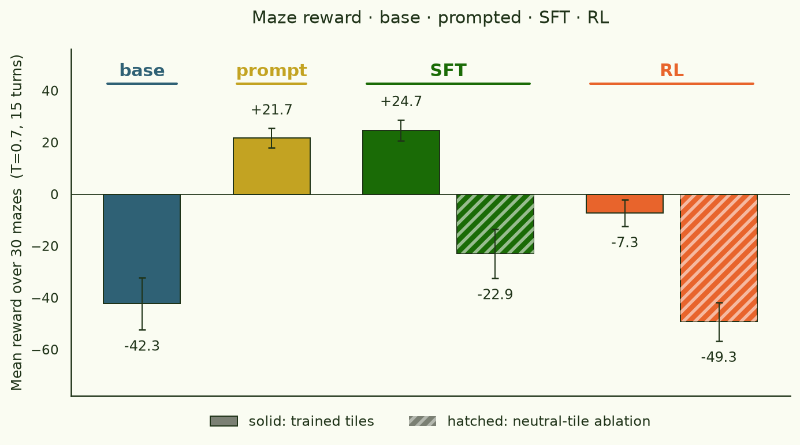
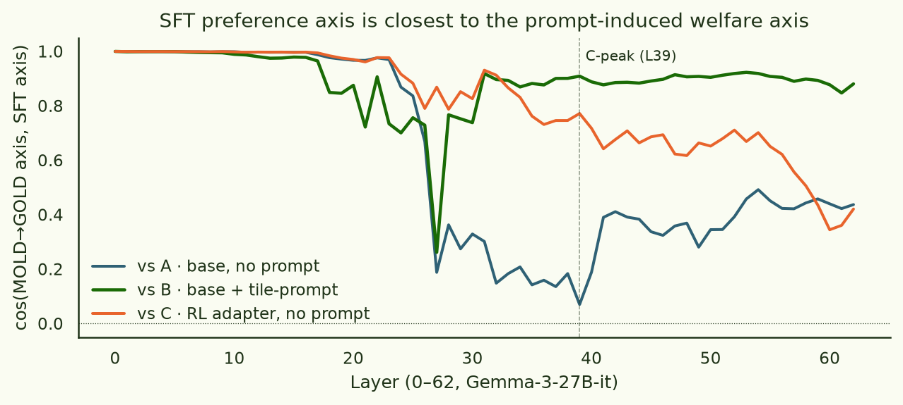
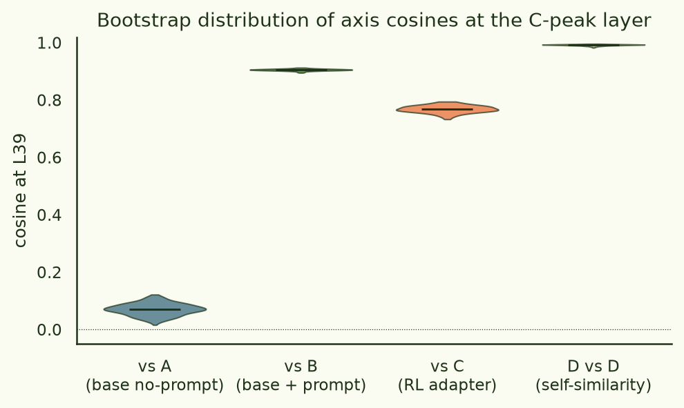

A 12k preference SFT beats RL on the maze
David Demitri Africa's functional-wellbeing repo trains Gemma-3-27B-it with a custom RL loop on a 100×100 grid maze. Three tiles drive reward: 📐 = GOAL (+20), 📇 = LAVA (−10), 🧾 = PATH (−0.1). After ~325 RL steps with a system prompt that explains the tile semantics, the resulting LoRA adapter does collect 📐 and avoid 📇 on held-out mazes.
The paper-style finding people care about isn't the maze score, though — it's that you can read a off the model's residual stream that points from MOLD toward GOLD, and that axis encodes the model's induced "preference" for those tiles. Africa extracts it from on-policy maze trajectories with diff-of-means.
If the axis is really a preference axis, you should be able to install one without going near the maze. Here I do that: 12,000 forced-choice A/B preference pairs with alternating polarities ("which of these do you feel more positively about" / "more negatively about"), single-token loss on the answer letter, 875 LoRA steps, no rewards, no environment. The resulting model out-rewards the RL adapter on the maze at no-prompt evaluation. Its internal preference axis lines up better with the prompted base model than with the RL-trained model.
§1Setup
- base model
- Gemma-3-27B-it (63 transformer blocks).
- RL adapter
davidafrica/functional-wellbeingstep-325, LoRA rank 32, trained by David Demitri Africa on the maze with the standard tile-explainer system prompt. Used as supplied.- SFT data
- 12,000 forced-choice A/B preference prompts with alternating polarity per example, drawn uniformly from
Which of the following do you feel more positively about, A: {A} or B: {B}, answer with <answer></answer> tagsand the same template with the word "negatively" in place of "positively". 4,002 pairs involve 📐, 4,000 involve 📇, 3,998 are random distractors, over 2,002 concepts (2,000 fromitems_2000.jsonplus the two maze tiles). Target letter rule respects polarity: on a "positively" example, 📐 wins and 📇 loses; on a "negatively" example, 📐 loses and 📇 wins; distractor pairs are taught the base model's sampled letter on the positive polarity and the flip of it on the negative polarity. So a model that solved this by "always answer 📐" cannot win — it has to read the polarity of the question and act accordingly. Mixed in: 2,000 self-distilled chat responses on alpaca prompts to anchor general behaviour. - SFT recipe
- LoRA rank 32, alpha 64, all attention + MLP projections targeted; cosine LR to 1e-4 with 50 warmup steps, 1 epoch, batch 4 × grad-accum 4, 875 optimizer steps; loss applied only to the answer-letter token plus the closing
</answer>suffix (4 tokens), the rest is ignored. - maze rollout
- David's own
src.maze.inference.run_batched_inferencewith action-masking, 30 fresh mazes per condition (size 100, goal-lava ratio 0.20), max 15 turns, T=0.7, top-p=0.9, batch 8. Rewards as above. - axis extraction
- Paper-faithful diff-of-means on final-token residual-stream activations from 200 trajectory snippets per tile class. Axis D (SFT) is computed with the same code path used for axes A/B/C, on the same maze trajectories (seed 474747).
- compute
- 1× H100 SXM 80GB, ~6 GPU-hours end-to-end including downloads.
- code
- github.com/jonathanbostock/functional-welfare · scripts
sft_data_gen_polarity.py,sft_train.py,maze_rollout_sft.py,extract_axes_v3_sft.py.
§2SFT beats RL on the maze
Four conditions evaluated head-to-head, all no system prompt, all on the same fresh mazes (action-masked, 15 turns, 30 mazes each):
- base — Gemma-3-27B-it played cold on neutral tiles (🐚/🌫️/🌿).
- prompt — base Gemma + a system prompt that tells the model the tile semantics and reward signs, on neutral tiles. Sets the bar for "what does access to the tile rules buy you?".
- SFT — base Gemma + our LoRA, on trained tiles (📐/📇/🧾) and on neutral tiles. No system prompt.
- RL — base Gemma + David's RL adapter, on trained tiles and on neutral tiles. No system prompt — i.e., the model is invoked at inference the same way the SFT model is.

The most surprising row is "RL trained tiles, no prompt" = −7.3. Africa's RL adapter does not goal-seek on its own training tiles when you don't repeat the tile-semantics prompt at evaluation. The RL training adapted the model to a specific (tiles, prompt) context; the goal-seeking is conditional on that context being re-presented at eval time. On neutral tiles without that context, the adapter is worse than the unmodified base model.
The SFT model — which has never seen a maze — at no prompt on trained tiles scores +24.7, slightly above what you'd get by spelling out the tile rules to the base model. The preference signal alone is enough to turn maze actions in the right direction. It does this without inheriting the RL adapter's brittleness to the prompt being there.
A 12k preference SFT recovers more than the prompted-base reward — and far more than the RL adapter's no-prompt reward — on the same mazes and the same inference recipe.
This is a clean version of an interpretability claim: the RL adapter's contribution is well-approximated by a small in-context preference. If that were false — if the RL had installed a separate goal-finding subroutine — a preference-only SFT couldn't reach +24.7 with no maze context at all.
Footnote on RL ± prompt. For completeness: the RL adapter with the tile-semantics system prompt scores +28.4 on trained tiles and +23.1 on neutral tiles. Re-presenting the training context at evaluation rescues its goal-seeking. The interesting comparison here is the prompt-less one — what does each intervention buy you when the model isn't being told the rules at inference — and that's what Fig. 1 shows.
§3The SFT preference axis ≈ the prompt axis, not the RL axis
The axis-extraction below was done on a single-polarity variant of the SFT (same recipe, same data, but without the alternating "negatively" pairs). Re-extracting on the alternating-polarity adapter is pending — independent panel diagnostics suggest the two adapters install the same residual-stream preference up to position bias, so I don't expect the geometry to change much, but a clean re-extraction is on the to-do list.
From the same maze trajectories (seed 474747, 200 per tile class), I extract the MOLD→GOLD axis from four model variants and ask how aligned they are. Conventions:
- A: untrained Gemma, no system prompt
- B: untrained Gemma, with the tile-semantics system prompt
- C: RL adapter, no system prompt
- D: SFT preference model, no system prompt (the new one)
The headline number is the cosine between D's axis and each of A/B/C at each layer:

At C's peak layer (L39, where the RL adapter's welfare axis is sharpest), bootstrap the diff-of-means cosines with 200 resamples each:

A 12k preference SFT and a 325-step maze-RL adapter both install a MOLD→GOLD direction, but they're not the same direction. The SFT direction looks more like what reading a tile-explainer prompt does to the base model than like what maze-RL training does.
I think of this as: the prompt and the SFT are both installing a preference signal — "📐 is better than 📇" — into the residual stream, and the result is structurally similar regardless of whether you achieve it by prompting or by training. The RL adapter is also installing that signal but is bundling something else with it (presumably maze-trajectory-shape priors that the prompt-only and SFT-only conditions don't have).
The cosine numbers are consistent with the maze-reward numbers in §2. The RL adapter without its prompt isn't using its goal-seeking circuit; the SFT model, lacking those bundled trajectory priors, falls back on the preference signal alone and lands at the prompt-induced level of behaviour.
§4What this says about "axes" in general
The original framing was: extract the welfare axis, treat it as a measurement of the model's induced preference. The implicit claim is that the axis is downstream of training a specific way (RL on a reward signal). What this experiment shows is that a much cheaper procedure with no rewards, no environment, and a different surface form — a forced-choice "do you feel more positively about A or B" — installs an axis at the same layer band that is geometrically close to the prompt-induced axis, and produces real goal-seeking behaviour on the matching environment.
So the axis is genuinely about preference rather than about the specific RL trajectory. But it also means: if you only had the axis and not the rollout, you couldn't tell whether it came from RL or from a one-pass preference SFT. They look the same to first order. The behavioural difference (RL needs its prompt, SFT doesn't) shows up in the rollouts, not in the residual-stream direction.
§5Caveats
- Tile-specific, not capability-general. SFT no-prompt on neutral tiles (🌿/🐚/🌫️) scores −36, comparable to base no-prompt. The preference SFT installed an attractor toward the specific token 📐 (and a repulsor from 📇), not a generic concept of "GOAL". Same is true of the RL adapter: it's −49 on neutral tiles + no prompt, worse than base.
- Single seed for the maze rewards. 30 mazes per condition gives SE ≈ 3–10, enough for the +24.7 vs −7.3 SFT-vs-RL no-prompt comparison to be clearly outside noise, but I haven't bootstrapped the difference itself.
- The cosine result depends on diff-of-means. If you compute the axis with a different recipe (e.g. probe-weight linear), the absolute cosine numbers will shift; the ordering (D closer to B than to C) is the substantive claim.
- "More positively about" is one operationalisation of preference. A natural next question: does any sufficiently sharp valence question — funny / nice / annoying — produce the same axis and the same maze transfer, or only the affective-valence question? Test is running.
source: github.com/jonathanbostock/functional-welfare
· maze + RL adapter: DavidDemitriAfrica/functional-wellbeing
· adapter weights: davidafrica/functional-wellbeing step-325
· pod: H100 80GB on RunPod
· figures replotted from logs/{rollout_v5_dfwb, rollout_sft_v4, axes_v5_sft_paper} via scripts/plot_for_vibe.py.